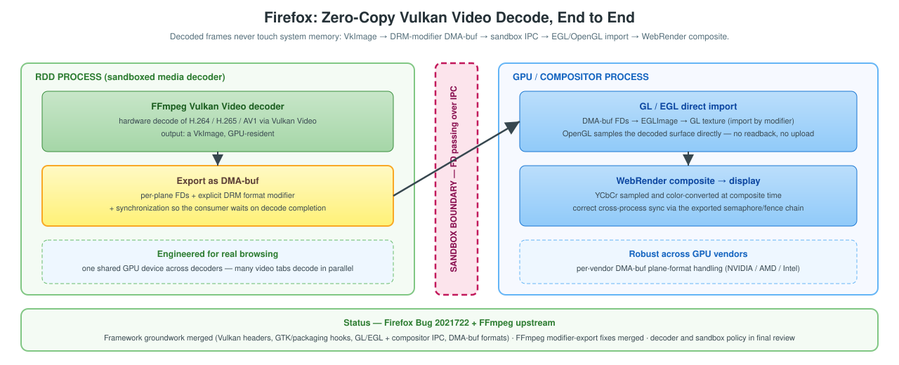
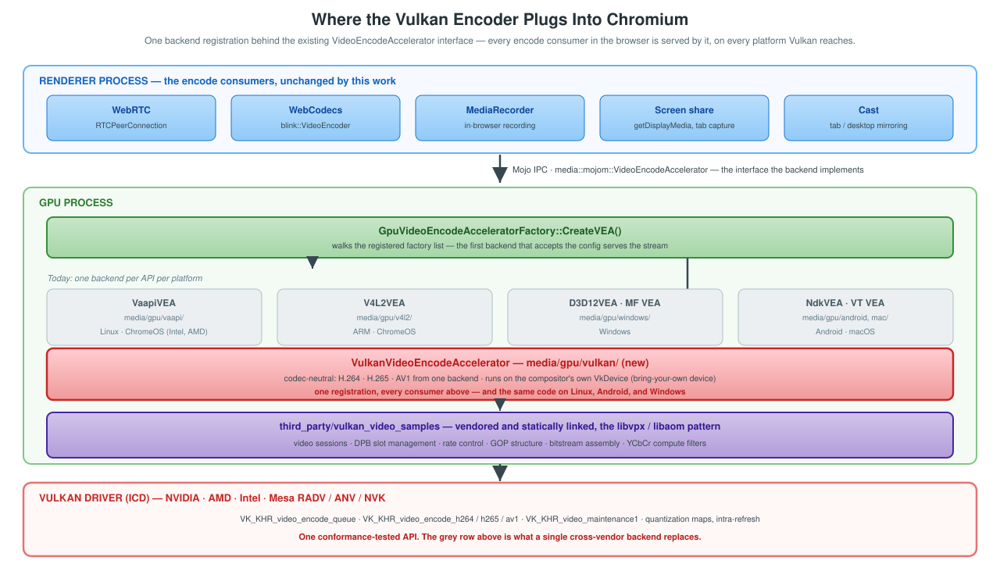
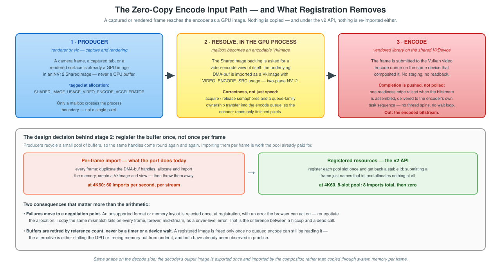
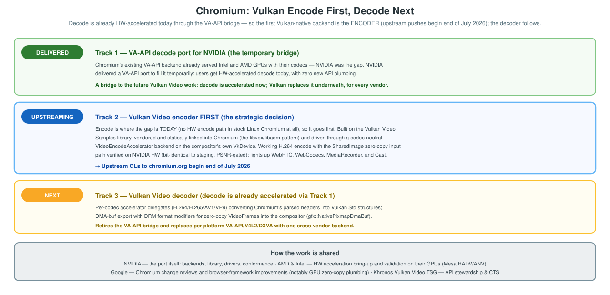

Every browser engine that wants hardware video acceleration inherits the same patchwork of vendor- and platform-specific acceleration paths. On Linux that means VA-API on some stacks and V4L2 on others; Windows brings DXVA and Media Foundation; embedded platforms add their own vendor SDKs. The result is a backend per API per platform on the browser side, a different integration to maintain on the driver side, and — because nobody can cover every combination — entire classes of hardware left with no accelerated codepath at all. NVIDIA GPUs on Linux desktops are the most visible casualty: capable silicon sitting idle while the CPU burns cycles on software codecs through every video call.
Vulkan® Video changes that equation: one explicit, cross-vendor, cross-platform API for hardware decode and encode, defined by the Khronos® Vulkan Video Subgroup and implemented by NVIDIA, AMD, and Intel drivers, with Mesa's open-source RADV, ANV, and NVK drivers following. The subgroup and NVIDIA are not just defining the API — we are implementing it in media frameworks and browsers, and this post is a tour of that work: what has already merged, what it took, and what lands next.
It is worth being concrete about the stakes, because video is not one feature among many in a browser. It is most of what a browser does. Video makes up well over half of all internet traffic by most measurements, and nearly every way people produce or consume it runs through a browser engine:
- Playback and streaming — YouTube, Netflix, Twitch, embedded video everywhere (decode)
- Video conferencing — Meet, Teams, Zoom, Discord, running all day (decode + encode)
- Screen sharing and collaboration — presenting a tab, a window, or the whole desktop (encode)
- In-browser recording — screen-and-camera capture, voice and video notes, interviews (encode)
- Remote desktop and cloud workstations — Chrome Remote Desktop and friends (decode + host encode)
- Cloud gaming — GeForce NOW and other browser-delivered game streams (low-latency decode)

The foundation: an API built for exactly this
Vulkan Video extends the same explicit-GPU philosophy of Vulkan to codec hardware: VK_KHR_video_queue plus decode and encode queue extensions, codec operation extensions for H.264, H.265, and AV1 (decode and encode, with VP9 decode alongside), maintenance extensions, and a growing set of encode-quality features — quantization maps, intra-refresh, tuning profiles. It comes with Khronos conformance tests (dEQP-VK.video.*) and a reference implementation: the Vulkan Video Samples library, which implements the hard parts — session management, DPB tracking, rate control, GOP structure, bitstream assembly, and GPU compute filters for YCbCr conversion.
What makes it a good fit for a browser is the same thing that makes it demanding: Vulkan Video is explicit. The application owns the decoded picture buffer and states which reference pictures each frame may use. It owns the video session and the parameter sets that configure it. It owns synchronization — the same semaphores and timelines the rest of its rendering already runs on. That is more work than a codec API which hides those details behind a stream handle. But a browser is already an explicit GPU application, with its own device, its own queues, and its own rules about how long a frame lives. Giving it a codec that plugs into those, instead of one that runs a private pipeline alongside them, is what makes a zero-copy path possible at all.
For applications, the payoff is that video decode, encode, graphics, and compute all live in one API with shared images, shared synchronization primitives, and interop with every window system Vulkan reaches. For browsers specifically, that means a decoded frame can be exported as a DMA-buf with an explicit DRM format modifier, imported by the compositor, and displayed — without ever touching system memory. That zero-copy, correctly-synchronized path is the heart of everything below.
Firefox: shipping the zero-copy decode stack
Firefox decodes media in a dedicated sandboxed process using FFmpeg. To make Vulkan Video work there, we advanced both layers of the stack: FFmpeg's Vulkan decoder now exports its output as a DMA-buf with an explicit DRM format modifier and correct cross-process synchronization, and the Firefox graphics framework imports those buffers directly into its GL/EGL compositor. A decoded frame is produced on the GPU, handed across the sandbox as a file descriptor, and sampled straight into the compositor — the pixels never touch system memory.

Getting there took real work in both projects. On the FFmpeg side, modifier-aware DMA-buf export and decode-barrier fixes merged upstream (#22566 and #22785). On the Firefox side, a train of patches under Bug 2021722 brought in the vendored Vulkan headers, the GTK and packaging hooks, the GL/EGL and compositor IPC path so OpenGL® can import the decoded surfaces directly, and per-vendor DMA-buf plane-format handling that keeps the import robust across NVIDIA, AMD, and Intel. We also hardened it for real browsing — a single shared GPU device across decoders so many video tabs play in parallel. The framework groundwork is merged; the decoder itself and its sandbox-access policy are in final review.
Chromium: Vulkan encode first, decode next
For Chromium we deliberately sequenced the work so users get value at every stage. The project began with detailed planning — integration design documents, a gap analysis of the Vulkan Video Samples library against Chromium's encoder interface, and a five-tier test plan that runs from in-process unit tests at pre-submit, through the media/gpu encoder tests on every change and WebCodecs web-platform tests per roll, up to browser-level WebRTC runs and nightly external conformance suites. On the decode side, Chromium's existing VA-API backend already served Intel and AMD GPUs — NVIDIA GPUs were the gap. So NVIDIA delivered a VA-API port as a temporary bridge: it fills that gap and gives Chromium users on NVIDIA hardware accelerated decode today, through the browser's existing backend.
With decode covered by the bridge, the ordering of the Vulkan-native work follows directly: encode goes first, decode next. Encode is where the real gap is — stock Linux Chromium has no hardware encode path at all today — while decode already works. So the first Vulkan-native backend to head upstream is the encoder; the Vulkan decoder follows it and, when it lands, retires the VA-API bridge and unifies decode across vendors. The encoder is built directly on the Vulkan API and the Vulkan Video Samples library — vendored and statically linked into Chromium the same way libvpx and libaom are, and driven by a codec-neutral VideoEncodeAccelerator backend that runs on the compositor's own Vulkan device. A SharedImage-based zero-copy input seam lets frames from the capture and rendering pipelines reach the encoder without CPU copies, and one backend registration lights up every browser encode consumer: WebRTC calls, screen sharing, WebCodecs, MediaRecorder, and Cast.

The input seam is where most of the design effort went. Producers recycle a small pool of buffers, so the same handles arrive over and over — and importing them on every frame is work the pool has already paid for. The encoder API therefore registers each buffer once and lets a submission simply name it, which turns sixty imports a second on a 4K60 stream into eight for the life of the pool. It also moves format and memory-layout rejections to a single negotiation point, where the browser can still renegotiate the allocation, instead of failing on every frame in the middle of a call.
The rest of the work is what happens when things go wrong, because an encoder in a browser sits behind a producer that will not wait: a video call does not pause because the encode queue is full. So backpressure is a first-class return value rather than an error — the backend drains, retries once, then parks the frame and re-kicks it when a slot retires. A frame that fails is delivered as a failure rather than silently dropped, so the pipeline above can react to it. Zero-copy inputs are held until the encode genuinely completes: releasing the shared image at submission time unmapped the import while the GPU was still reading it, which surfaced as a device-lost error and a dead tab. That one is worth stating plainly, because it is exactly the class of bug an unhardened zero-copy path meets in its first week. A watchdog tracks forward progress and terminates a wedged session instead of hanging the tab that owns it. And because the whole state machine sits behind a fake encoder, its tests run without a GPU at all — which is what lets them run on every change in Chromium's commit queue rather than only on hardware bots.

The Chromium timeline and the division of labor. Now: NVIDIA is completing the port — the vendored library, the encode backend, the zero-copy plumbing, and the test tiers. End of July 2026: we begin pushing the changes upstream to the Chromium project. Alongside: AMD and Intel join on the hardware-acceleration bring-up for their GPUs, and Google supports the effort with change reviews and browser-framework improvements — most importantly the GPU zero-copy infrastructure the encoder plugs into.

Beyond the browser: one API across the ecosystem
The browser is the most visible target, but it is one front in a broader effort. The same Vulkan Video API, drivers, conformance tests, and reference library that power these browser integrations are the foundation for hardware video across the entire Vulkan ecosystem — from desktops out to embedded and automotive systems, the way Vulkan graphics already spans that whole range. One conformance-tested API and one set of drivers, reused from an in-vehicle display or a set-top box to a desktop browser, instead of a different codec stack for every platform. The browser work is the leading edge of expanding Vulkan Video the way Vulkan graphics was expanded before it.
Why this matters
Moving encode off the CPU and onto dedicated silicon should show up on every axis that matters to a laptop or a fanless device: processor load, power draw, latency, and memory traffic. We are measuring all four. Our two test cases are an everyday 1080p video call and an all-GPU tab recording, where capture, color conversion, and encode never leave the GPU. We would rather not quote numbers before we have measured them, so the figures will be published alongside the upstream Chromium change lists, reproducible from the test recipes that produced them. Two entries on that scorecard are already settled, because they are architectural facts rather than benchmarks: the zero-copy path is verified bit-identical to the software reference, and the all-GPU lane moves zero frame bytes through system memory by construction.
When this work completes, a browser needs just one video acceleration backend. That backend runs on every GPU vendor and every Vulkan-capable platform: Linux under Wayland and X11, Windows, and the embedded and automotive systems where Vulkan is already the standard graphics API. Video calls stop pegging CPU cores on machines built with dedicated silicon for exactly this job. And the path from decoder to screen — and from capture to encoder — is zero-copy with explicit synchronization. That makes it not just accelerated but efficient, in the way battery-powered and thermally-constrained devices need.
The Khronos Vulkan Video Subgroup and NVIDIA are committed to this across the whole stack: the API and conformance tests, the drivers, FFmpeg, the Vulkan Video Samples library, and the browser integrations themselves. AMD, Intel, Google, Mozilla, and the FFmpeg community are partners in review and bring-up. Watch for the Chromium encoder CLs starting to land upstream at the end of this month.
The Vulkan Video Samples repository and the upstream FFmpeg support are available to build against now. If you run Firefox on Linux, try the Vulkan decode path and file bugs — driver-matrix coverage is where we most need real-world reports. And if you want a say in what lands next, the Vulkan Video Subgroup is open to all Khronos members.
References
- Firefox integration: Bugzilla 2021722
- FFmpeg: #22566 (DRM map / decode barriers / modifier output), #22785 (cleanups)
- Chromium design & analysis: decode design, encode design, encoder use cases & zero-copy processing graphs, test plan
- Khronos Vulkan Video: khronos.org/vulkan · Vulkan Video Samples: github.com/KhronosGroup/Vulkan-Video-Samples